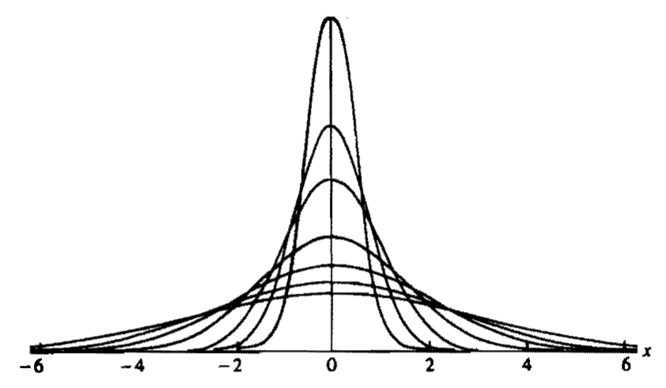

[统计推断]第三章·常见分布族（三）
\[ \newcommand{\E}{\mathbb E} \newcommand{\Var}{\mathrm{Var}} \newcommand{\Beta}{\mathrm{B}} \newcommand{\btheta}{\boldsymbol{\theta}} \]
1 指数族
若一个概率密度函数族或概率质量函数族可以表示为： \[ f(x\vert\btheta)=h(x)c(\btheta)\exp\left(\sum_{i=1}^kw_i(\btheta)t_i(x)\right)\tag{1}\label{form1} \] 则称之为指数族（exponential family）。其中 \(h(x)\geq 0\)，\(t_1(x),\ldots,t_k(x)\) 是观测值 \(x\) 且不依赖于 \(\btheta\) 的实值函数，\(c(\btheta)\geq 0\)，\(w_1(\btheta),\ldots,w_k(\btheta)\) 是参数向量 \(\btheta\) 且不依赖于 \(x\) 的实值函数。连续的正态分布族、伽玛分布族、贝塔分布族，离散的二项分布族、泊松分布族、负二项分布族都是指数族。
指数族的特殊形式决定了它具有很好的统计学性质：
定理：设随机变量 \(X\) 的 pdf 或 pmf 形如上式，则： \[ \begin{align} &\E\left[\sum_{i=1}^k\frac{\partial w_i(\btheta)}{\partial \btheta_j}t_i(X)\right]=-\frac{\partial}{\partial\btheta_j}\ln c(\btheta)\\ &\Var\left(\sum_{i=1}^k\frac{\partial w_i(\btheta)}{\partial \btheta_j}t_i(X)\right)=-\frac{\partial^2}{\partial\btheta_j^2}\ln c(\btheta)-\E\left[\sum_{i=1}^k\frac{\partial^2 w_i(\btheta)}{\partial \btheta_j^2}t_i(X)\right] \end{align} \] 上面的公式虽然看似复杂，但应用时却很奏效，它们将积分与求和变成求导运算，而后者计算起来非常容易。
Proof.
对 \[ \int f(x\vert \btheta)\mathrm dx=\int h(x)c(\btheta)\exp\left(\sum_{i=1}^kw_i(\btheta)t_i(x)\right)\mathrm dx=1 \] 求导，得到： \[ \begin{align} &\int\left[h(x)\exp\left(\sum_{i=1}^kw_i(\btheta)t_i(x)\right)\left(\frac{\partial c(\btheta)}{\partial\btheta_j}+c(\btheta)\frac{\partial w_i(\btheta)}{\partial \btheta_j}t_i(x)\right)\right]\mathrm dx\\ =&\E\left[\sum_{i=1}^k\frac{\partial w_i(\btheta)}{\partial \btheta_j}t_i(X)\right]+\frac{\partial c(\btheta)}{\partial\btheta_j}\int\left[h(x)\exp\left(\sum_{i=1}^kw_i(\btheta)t_i(x)\right)\right]\mathrm dx\\ =&\E\left[\sum_{i=1}^k\frac{\partial w_i(\btheta)}{\partial \btheta_j}t_i(X)\right]+\frac{\partial c(\btheta)}{\partial\btheta_j}\frac{1}{c(\btheta)}\\ =&\E\left[\sum_{i=1}^k\frac{\partial w_i(\btheta)}{\partial \btheta_j}t_i(X)\right]+\frac{\partial}{\partial\btheta_j}\ln c(\btheta)\\ =&0 \end{align} \]
对上式求两次导，可证得第二式，过程略。
Q.E.D.
例子【二项分布】设 \(n\) 为正整数，\(0<p<1\)： \[\begin{align}f(x\vert p)&=\binom{n}{x}p^x(1-p)^{n-x}\\&=\binom{n}{x}(1-p)^n\left(\frac{p}{1-p}\right)^x\\&=\binom{n}{x}(1-p)^n\exp\left(x\cdot\ln\frac{p}{1-p}\right)&&x=0,\ldots,n\end{align}\] 取 \[\begin{align}&h(x)=\binom{n}{x}&&x=0,\ldots,n\\&c(p)=(1-p)^n&&0<p<1\\&w_1(p)=\ln\frac{p}{1-p}&&0<p<1\\&t_1(x)=x&&x=0,\ldots,n\end{align}\] 由于我们限制了 \(x=0,\ldots,n\)，\(0<p<1\)，保证了 \(h(x)\geq 0,\,c(p)\geq0\)，因此在给定 \(n\) 的情形下，二项分布族是一个指数族。
由于 \[\begin{align}&\frac{\mathrm d}{\mathrm dp}w_1(p)=\frac{\mathrm d}{\mathrm dp}\ln\frac{p}{1-p}=\frac{1}{p(1-p)}\\&\frac{\mathrm d^2}{\mathrm dp^2}w_1(p)=\frac{\mathrm d}{\mathrm dp}\frac{1}{p(1-p)}=\frac{2p-1}{p^2(1-p)^2}\\&\frac{\mathrm d}{\mathrm dp}\ln c(p)=\frac{\mathrm d}{\mathrm dp}n\ln (1-p)=\frac{-n}{1-p}\\&\frac{\mathrm d^2}{\mathrm dp^2}\ln c(p)=\frac{\mathrm d}{\mathrm dp}\frac{-n}{1-p}=\frac{-n}{(1-p)^2}\end{align}\] 故根据前文定理得： \[\begin{align}&\E\left[\frac{X}{p(1-p)}\right]=\frac{n}{1-p}\\&\Var\left(\frac{X}{p(1-p)}\right)=\frac{n}{(1-p)^2}-\E\left[\frac{2p-1}{p^2(1-p)^2}X\right]\end{align}\] 解得：\(\E X=np,\,\Var X=np^2-np(2p-1)=np(1-p)\).
例子【正态分布】设 \(-\infty<\mu<+\infty\)，\(\sigma>0\)： \[f(x\vert \mu,\sigma^2)=\frac{1}{\sqrt{2\pi}\sigma}\exp\left(-\frac{(x-\mu)^2}{2\sigma^2}\right)=\frac{1}{\sqrt{2\pi}\sigma}\exp\left(-\frac{\mu^2}{2\sigma^2}\right)\exp\left(-\frac{x^2}{2\sigma^2}+\frac{\mu x}{\sigma^2}\right)\] 取 \[\begin{align}&h(x)=1&&-\infty<x<+\infty\\&c(\mu,\sigma)=\frac{1}{\sqrt{2\pi}\sigma}\exp\left(-\frac{\mu^2}{2\sigma^2}\right)&&-\infty<\mu<+\infty,\,\sigma>0\\&w_1(\mu,\sigma)=-\frac{1}{\sigma^2}&&-\infty<\mu<+\infty,\,\sigma>0\\&w_2(\mu,\sigma)=\frac{\mu}{\sigma^2}&&-\infty<\mu<+\infty,\,\sigma>0\\&t_1(x)=\frac{x}{2}&&-\infty<x<+\infty\\&t_2(x)=x&&-\infty<x<+\infty\end{align}\] 故正态分布族是指数族。
注意，在把概率密度/质量函数族写作 \(\eqref{form1}\) 形式时，应保证 \(x\) 的定义域范围不变，我们可以借助示性函数将 \(x\) 的定义范围写入表达式。例如对于正态分布： \[ f(x\vert \mu,\sigma^2)=\frac{1}{\sqrt{2\pi}\sigma}\exp\left(-\frac{\mu^2}{2\sigma^2}\right)\exp\left(-\frac{x^2}{2\sigma^2}+\frac{\mu x}{\sigma^2}\right)I_{(-\infty,+\infty)}(x) \] 定义域有时候会比较 tricky。例如概率密度函数 \(f(x\vert \theta)=\frac{1}{\theta}\exp\left(1-\frac{x}{\theta}\right)I_{[\theta,+\infty)}(x)\) 虽然看起来很像指数族，但是由于 \(x\) 的定义范围 \(I_{[\theta,+\infty)}(x)\) 依赖于 \(\theta\)，故它并不是指数族。
如果对指数族定义式做一个变量替换 \(\eta_i=w_i(\btheta)\)，得到指数族的另一个形式： \[ f(x\vert \eta)=h(x)c^\ast(\eta)\exp\left(\sum_{i=1}^k\eta_i t_i(x)\right)\tag{2}\label{form2} \] 称集合 \[ \mathcal H=\left\{\eta=(\eta_1,\ldots,\eta_k):\int_{-\infty}^{+\infty}h(x)\exp\left(\sum_{i=1}^k\eta_it_i(x)\right)\mathrm dx<+\infty\right\} \] 为指数族的自然参数空间。对于任意 \(\eta\in\mathcal H\)，为保证概率密度函数积分为 \(1\)，必有 \[ c^\ast(\eta)=\left[\int_{-\infty}^{+\infty}h(x)\exp\left(\sum_{i=1}^k\eta_it_i(x)\right)\mathrm dx\right]^{-1} \] \(\eqref{form2}\) 式比 \(\eqref{form1}\) 式更为灵活和广泛，集合 \(\{\eta=(w_1(\btheta),\ldots,w_k(\btheta)):c(\btheta)>0\}\) 是自然参数空间 \(\mathcal H\) 的子集，而 \(\mathcal H\) 中可能还存在其他的 \(\eta\) 值。
如果指数族 pdf 满足：\(\dim\btheta <k\)，则称作曲指数族；如果 \(\dim\btheta=k\)，则称作完全指数族。
2 位置和尺度族
本节将构造三种分布族：位置族、尺度族、位置-尺度族，构造方法为：预先给定该分布族的一个标准 pdf \(f(x)\)，然后用指定方法对其进行变换以得到该分布族的所有其他 pdf.
定理：设 \(f(x)\) 是 pdf，\(\mu\) 和 \(\sigma>0\) 是任意给定参数，则函数 \[ g(x\vert\mu,\sigma)=\frac{1}{\sigma}f\left(\frac{x-\mu}{\sigma}\right) \] 也是 pdf. 证明非常容易，略去。
位置族
设 \(f(x)\) 是 pdf，则称 \(f(x-\mu),\,-\infty<\mu<+\infty\) 是标准 pdf 为 \(f(x)\) 的位置族，称参数 \(\mu\) 为位置参数。
直观上就是将标准 pdf 向右平移了 \(\mu\) 个单位。
尺度族
设 \(f(x)\) 是 pdf，则称 \((1/\sigma)f(x/\sigma),\,\sigma>0\) 是标准 pdf 为 \(f(x)\) 的尺度族，称参数 \(\sigma\) 为尺度参数。
直观上就是将标准 pdf 横向拉伸了 \(\sigma\) 倍并纵向压缩到原来的 \(1/\sigma\)。

位置-尺度族
设 \(f(x)\) 是 pdf，则称 \((1/\sigma)f((x-\mu)/\sigma),\,\sigma>0\) 是标准 pdf 为 \(f(x)\) 的位置-尺度族。
正态分布族和双指数分布族都是位置-尺度族的例子。
位置-尺度族的概率计算常通过标准化变量计算： \[ P(X\leq x)=P\left(\frac{X-\mu}{\sigma}\leq\frac{x-\mu}{\sigma}\right)=P\left(Z\leq\frac{x-\mu}{\sigma}\right) \] 标准化变量的概率 \(P(Z\leq z)\) 常常容易计算或可查表得到。
3 不等式与恒等式
3.1 切比雪夫不等式
设 \(X\) 是随机变量，\(g(x)\) 是非负函数，则对任意 \(r>0\) 有 \[ P(g(X)\geq r)\leq \frac{\E g(X)}{r} \] Proof. \[ \begin{align} \E g(X)&=\int_{-\infty}^{+\infty}g(x) f_X(x)\mathrm dx\\ &\geq\int_{\{x:g(x)\geq r\}}g(x)f_X(x)\mathrm dx\\ &\geq r\int_{\{x:g(x)\geq r\}}f_X(x)\mathrm dx\\ &=rP(g(X)\geq r) \end{align} \] Q.E.D.
可能切比雪夫不等式更常见的形式不是上面这样，但可以从它推导出来：设 \(g(x)=(x-\mu)^2/\sigma^2\)，其中 \(\mu=\E X,\,\sigma^2=\Var X\). 取 \(r=t^2\)，代入 Chebychev 不等式得到： \[ P\left(\frac{(x-\mu)^2}{\sigma^2}\geq t^2\right)\leq\frac{1}{t^2}\E\left[\frac{(X-\mu)^2}{\sigma^2}\right]=\frac{1}{t^2} \] 即： \[ P(|X-\mu|\geq t\sigma)\leq \frac{1}{t^2} \] 此不等式告诉我们随机变量偏离其均值的上界，无论 \(X\) 是什么分布。也正是因为它没有对分布作限制，这个结论往往比较保守。
3.2 马尔可夫不等式
若 \(P(Y\geq 0)=1\) 且 \(P(Y=0)<1\)，则对任意 \(r>0\)，有 \[ P(Y\geq r)\leq\frac{\E X}{r} \]
3.3 Stein 引理
设 \(X\sim N(\theta,\sigma^2)\)，\(g\) 是满足 \(\E |g'(X)|<+\infty\) 的可导函数，则： \[ \E[g(X)(X-\theta)]=\sigma^2\E g'(X) \] Proof. \[ \begin{align} \E[g(X)(X-\theta)]&=\frac{1}{\sqrt{2\pi}\sigma}\int_{-\infty}^{+\infty}g(x)(x-\theta)e^{-(x-\theta)^2/2\sigma^2}\mathrm dx\\ &=-\frac{\sigma}{\sqrt{2\pi}}\int_{-\infty}^{+\infty}g(x)\mathrm de^{-(x-\theta)^2/2\sigma^2}\\ &=-\frac{\sigma}{\sqrt{2\pi}}\left[\left.g(x)e^{-(x-\theta)^2/2\sigma^2}\right|_{-\infty}^{+\infty}-\int_{-\infty}^{+\infty}e^{-(x-\theta)^2/2\sigma^2}g'(x)\mathrm dx\right]\\ &=\sigma^2\E g'(x) \end{align} \] Q.E.D.
高阶正态矩：利用 Stein 引理可以简化计算高阶正态矩：设 \(X\sim N(\theta,\sigma^2)\)，则： \[ \begin{align} \E X^3&=\E[X^2(X-\theta+\theta)]\\ &=\E[X^2(X-\theta)]+\theta\E X^2\\ &=2\sigma^2\E X+\theta\E X^2\\ &=2\sigma^2\theta+\theta(\sigma^2+\theta^2)\\ &=3\theta\sigma^2+\theta^3 \end{align} \]
3.4 一个关于 \(\chi^2\) 随机变量的恒等式
设 \(\chi^2_p\) 是自由度为 \(p\) 的 \(\chi^2\) 随机变量，则对任意函数 \(h(x)\)，有： \[ \E h(\chi^2_p)=p\E\left[\frac{h(\chi^2_{p+2})}{\chi^2_{p+2}}\right] \] 这里假定上述期望存在。
Proof. \[ \begin{align} \E h(\chi^2_p)&=\frac{1}{\Gamma(p/2)2^{p/2}}\int_0^{+\infty}h(x)x^{p/2-1}e^{-x/2}\mathrm dx\\ &=\frac{p}{\Gamma({(p+2)}/2)2^{(p+2)/2}}\int_0^{+\infty}\frac{h(x)}{x} x^{(p+2)/2-1}e^{-x/2}\mathrm dx\\ &=p\E\left[\frac{h(\chi^2_{p+1})}{\chi^2_{p+1}}\right] \end{align} \] Q.E.D.
高阶 \(\chi^2\) 矩：利用上述恒等式可以简化计算高阶 \(\chi^2\) 矩： \[ \E[(\chi^2_{p})^2]=p\E[\chi^2_{p+2}]=p(p+2) \]
3.5 Hwang 给出的两个恒等式
文献：Hwang, Jiunn Tzon. "Improving upon standard estimators in discrete exponential families with applications to Poisson and negative binomial cases." The Annals of Statistics (1982): 857-867.
设函数 \(g(x)\) 满足 \(-\infty<\E g(X)<+\infty\) 且 \(-\infty<g(-1)<+\infty\)，那么：
若 \(X\) 服从参数为 \(\lambda\) 的 Poisson 分布，则： \[ \E[\lambda g(X)]=\E[Xg(X-1)] \]
若 \(X\) 服从参数为 \((r,p)\) 的负二项分布，则： \[ \E[(1-p)g(X)]=\E\left[\frac{X}{r+X-1}g(X-1)\right] \]
Proof.
\[ \begin{align} \E[\lambda g(X)]&=\sum_{x=0}^{+\infty}\lambda g(x)\frac{e^{-\lambda}\lambda^x}{x!}\\ &=\sum_{x=0}^{+\infty}(x+1)g(x)\frac{e^{-\lambda}\lambda^{x+1}}{(x+1)!}\\ &=\sum_{y=1}^{+\infty}yg(y-1)\frac{e^{-\lambda}\lambda^y}{y!}&&y=x+1\\ &=\sum_{y=0}^{+\infty}yg(y-1)\frac{e^{-\lambda}\lambda^y}{y!}&&y=x+1\\ &=\E[Xg(X-1)] \end{align} \]
\[ \begin{align} \E[(1-p)g(X)]&=\sum_{x=0}^{+\infty}(1-p)g(x)\binom{r+x-1}{x}p^r(1-p)^x\\ &=\sum_{y=1}^{+\infty}g(y-1)\binom{r+y-2}{y-1}p^r(1-p)^{y}&&y=x+1\\ &=\sum_{y=1}^{+\infty}g(y-1)\frac{y}{r+y-1}\binom{r+y-1}{y}p^r(1-p)^{y}\\ &=\sum_{y=0}^{+\infty}g(y-1)\frac{y}{r+y-1}\binom{r+y-1}{y}p^r(1-p)^{y}\\ &=\E\left[\frac{X}{r+X-1}g(X-1)\right] \end{align} \]
Q.E.D.
高阶 Poisson 矩：利用上述恒等式可以简化计算高阶 Poisson 矩：设 \(X\sim\mathrm{poisson}(\lambda)\)，则： \[ \E[\lambda X^2]=\E[X(X-1)^2]=\E X^3-2\E X^2+\E X \] 故 \[ \E X^3=(\lambda+2)\E X^2-\E X=\lambda(\lambda+1)(\lambda+2)-\lambda=\lambda(\lambda^2+3\lambda+1) \]